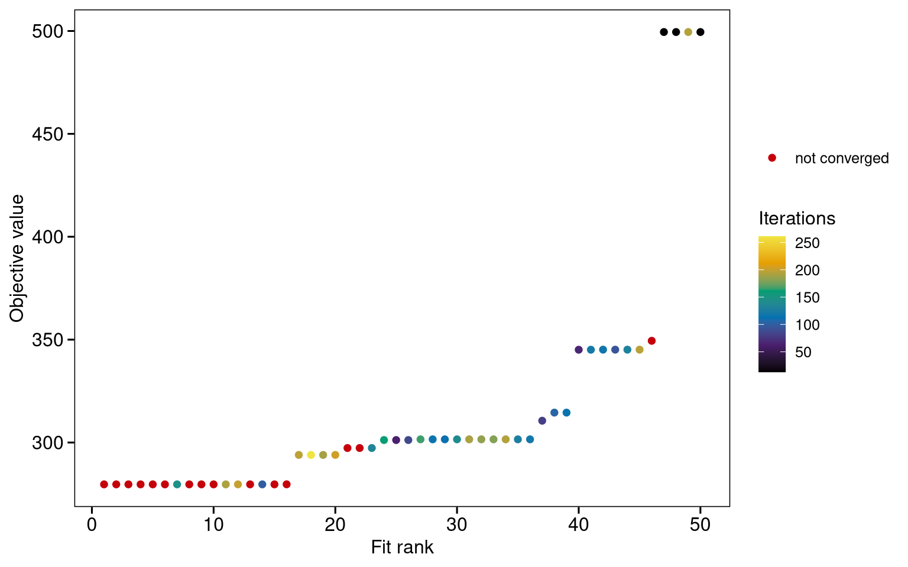
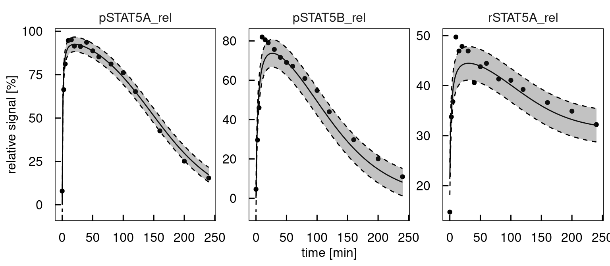
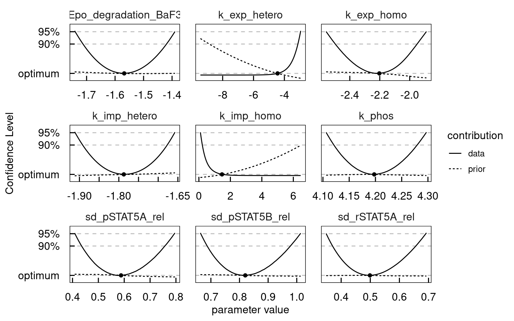

STAT5 dimerization (Boehm 2014)
Source:vignettes/articles/boehmJProteomeRes2014.Rmd
boehmJProteomeRes2014.Rmd[1] TRUE TRUE TRUE
Shows: mstrust(), reml(),
profile(), profileThreshold(),
confint(), plotProfile(),
importPEtab().
STAT5 dimerization in BaF3 cells after Boehm et al. (2014), J Proteome Res 13:5685: multistart, error model by restricted maximum likelihood, prediction band, profiles and the PEtab form of the problem.
Run
With this folder as working directory:
source("analysis.R").
library(dMod2)
library(ggplot2)
.modelname <- "boehm"
dir.create("build", showWarnings = FALSE)
# generated sources and shared objects in build/, reused when nothing changed
options(dMod2.outdir = "build")
.cores <- detectFreeCores()
set.seed(5555)
.petabDir <- system.file("extdata", "petab_boehm", package = "dMod2")Reactions
BaF3-EpoR cells respond to erythropoietin: STAT5A and STAT5B are
phosphorylated, form the dimers ApA, ApB and BpB, move into the nucleus
and return. The Epo stimulus decays and enters the rates in closed form,
so time appears in a rate. Nuclear species get their
compartment before the reactions that produce them.
epo <- "1.25e-7*exp(-Epo_degradation_BaF3*time)"
reactions <- eqnlist() |>
assignCompartment(nucpApA = "nuc", nucpApB = "nuc", nucpBpB = "nuc", volume = "0.45") |>
addReaction("2*STAT5A", "pApA", paste0("k_phos*", epo, "*STAT5A^2"),
"STAT5A-STAT5A phosphorylation", compartment = "cyt") |>
addReaction("STAT5A + STAT5B", "pApB", paste0("k_phos*", epo, "*STAT5A*STAT5B"),
"STAT5A-STAT5B phosphorylation", compartment = "cyt") |>
addReaction("2*STAT5B", "pBpB", paste0("k_phos*", epo, "*STAT5B^2"),
"STAT5B-STAT5B phosphorylation", compartment = "cyt") |>
addReaction("pApA", "nucpApA", "k_imp_homo*pApA", "pApA import", compartment = "cyt") |>
addReaction("pApB", "nucpApB", "k_imp_hetero*pApB", "pApB import", compartment = "cyt") |>
addReaction("pBpB", "nucpBpB", "k_imp_homo*pBpB", "pBpB import", compartment = "cyt") |>
addReaction("nucpApA", "2*STAT5A", "k_exp_homo*nucpApA", "pApA export", compartment = "nuc") |>
addReaction("nucpApB", "STAT5A + STAT5B", "k_exp_hetero*nucpApB", "pApB export", compartment = "nuc") |>
addReaction("nucpBpB", "2*STAT5B", "k_exp_homo*nucpBpB", "pBpB export", compartment = "nuc") |>
setCompartmentVolume(cyt = "1.4")The volumes enter the right-hand side as the ratios that convert a flux from the compartment it is written in into that of the species it changes.
as.eqnvec(reactions)#> Idx Inner <- Outer
#> 1 nucpApA <- 1*(k_imp_homo*pApA)*(1.4/0.45)-1*(k_exp_homo*nucpApA)
#> 2 nucpApB <- 1*(k_imp_hetero*pApB)*(1.4/0.45)-1*(k_exp_hetero*nucpApB)
#> 3 nucpBpB <- 1*(k_imp_homo*pBpB)*(1.4/0.45)-1*(k_exp_homo*nucpBpB)
#> 4 pApA <- 1*(k_phos*1.25e-7*exp(-Epo_degradation_BaF3*time)*STAT5A^2)-1*(k_imp_homo*pApA)
#> 5 pApB <- 1*(k_phos*1.25e-7*exp(-Epo_degradation_BaF3*time)*STAT5A*STAT5B)-1*(k_imp_hetero*pApB)
#> 6 pBpB <- 1*(k_phos*1.25e-7*exp(-Epo_degradation_BaF3*time)*STAT5B^2)-1*(k_imp_homo*pBpB)
#> 7 STAT5A <- -2*(k_phos*1.25e-7*exp(-Epo_degradation_BaF3*time)*STAT5A^2)-1*(k_phos*1.25e-7*exp(-Epo_degradation_BaF3*time)*STAT5A*STAT5B)+2*(k_exp_homo*nucpApA)*(0.45/1.4)+1*(k_exp_hetero*nucpApB)*(0.45/1.4)
#> 8 STAT5B <- -1*(k_phos*1.25e-7*exp(-Epo_degradation_BaF3*time)*STAT5A*STAT5B)-2*(k_phos*1.25e-7*exp(-Epo_degradation_BaF3*time)*STAT5B^2)+1*(k_exp_hetero*nucpApB)*(0.45/1.4)+2*(k_exp_homo*nucpBpB)*(0.45/1.4)Observables
Only relative quantities were measured, mixed by the isotope ratio specC17. The error model has one standard deviation per observable, estimated with the rest.
myOptions <- list(atol = 1e-8, rtol = 1e-6, maxattempts = 100L, maxsteps = 1e6)
model <- odemodel(reactions, modelname = "boehm_ode", compile = FALSE)
x <- Xs(model, options = myOptions)
observables <- eqnvec(
pSTAT5A_rel = "(100*pApB + 200*pApA*specC17)/(pApB + STAT5A*specC17 + 2*pApA*specC17)",
pSTAT5B_rel = "-(100*pApB - 200*pBpB*(specC17 - 1))/((STAT5B*(specC17 - 1) - pApB) + 2*pBpB*(specC17 - 1))",
rSTAT5A_rel = "(100*pApB + 100*STAT5A*specC17 + 200*pApA*specC17)/(2*pApB + STAT5A*specC17 + 2*pApA*specC17 - STAT5B*(specC17 - 1) - 2*pBpB*(specC17 - 1))"
)
errors <- eqnvec(
pSTAT5A_rel = "sd_pSTAT5A_rel",
pSTAT5B_rel = "sd_pSTAT5B_rel",
rSTAT5A_rel = "sd_rSTAT5A_rel"
)
g <- Y(observables, x, modelname = "boehm_obs", compile = FALSE)
e <- Y(errors, g, modelname = "boehm_err", compile = FALSE)Transformation
Initial dimers are zero, the STAT5 pool is split by the measured ratio, and the nine estimated parameters are on log10.
innerpars <- getParameters(model, g, e)
estimated <- c("Epo_degradation_BaF3", "k_exp_hetero", "k_exp_homo", "k_imp_hetero",
"k_imp_homo", "k_phos", "sd_pSTAT5A_rel", "sd_pSTAT5B_rel", "sd_rSTAT5A_rel")
p <- eqnvec() |>
define("x <- x", x = innerpars) |>
define("x <- 0", x = c("pApA", "pApB", "pBpB", "nucpApA", "nucpApB", "nucpBpB")) |>
insert("STAT5A <- 207.6*ratio") |>
insert("STAT5B <- 207.6 - 207.6*ratio") |>
insert("ratio <- 0.693") |>
insert("specC17 <- 0.107") |>
insert("x <- exp10(x)", x = estimated) |>
P(modelname = "boehm_trafo", condition = "Boehm2014", compile = FALSE)One call compiles ODE, sensitivities, observation, error model and trafo together into one shared object.
compile(g, x, p, e, output = .modelname, cores = .cores)
prd <- g*x*p
outerpars <- getParameters(prd)Multistart
Two directions are practically non-identifiable, so a weak prior keeps the dynamic parameters finite. It stays off the standard deviations, whose REML estimate below solves the stationarity condition of the data term alone.
data(boehm)
data <- as.datalist(boehm)
pouter <- structure(rep(-1, length(outerpars)), names = outerpars)
dyn <- setdiff(outerpars, grep("^sd_", outerpars, value = TRUE))
obj <- normL2(data, prd, e) + constraintL2(pouter[dyn], sigma = 4)Fifty trust-region fits from random starts, sorted by value: the lowest plateau holds the runs that reached the best optimum.
fits <- mstrust(obj, pouter, sd = 3, fits = 50, cores = .cores, iterlim = 5000) |>
as.parframe()
plotValues(fits, tol = 0.1, value < 1e4)
best <- as.parvec(fits)REML
Maximum likelihood underestimates the standard deviations, because
the fitted mean shrinks the residuals. reml() counts each
data point with one minus the leverage, the stationarity condition of
the restricted likelihood (Patterson and Thompson 1971), which corrects
the variances for the degrees of freedom the mean uses.
remlfit <- reml(obj, best)
rbind(ML = best[remlfit$errpars], REML = remlfit$argument[remlfit$errpars])#> sd_pSTAT5A_rel sd_pSTAT5B_rel sd_rSTAT5A_rel
#> ML 0.5877357 0.8201003 0.4987671
#> REML 0.6253827 0.8442638 0.5249191
remlfit$dof # data points minus the summed leverage, per observable#> pSTAT5A_rel pSTAT5B_rel rSTAT5A_rel
#> 13.67754 14.22182 14.10064
remlfit$rank # effective number of mean parameters#> [1] 6The summed leverage per observable adds up to the rank.
tapply(remlfit$leverage$leverage, remlfit$leverage$name, sum)#> pSTAT5A_rel pSTAT5B_rel rSTAT5A_rel
#> 2.322464 1.778181 1.899355Prediction band
One standard deviation of the REML error model around the prediction.
times <- seq(0, 240, length.out = 200)
prediction <- prd(times, remlfit$argument, deriv = FALSE)
plot(prediction, data) +
geom_ribbon(data = as.data.frame(prediction, errfn = e),
aes(x = time, ymin = value - sigma, ymax = value + sigma),
linetype = "dashed", alpha = 0.3) +
labs(x = "time [min]", y = "relative signal [%]", color = NULL)
Profiles
A profile re-optimizes every other parameter while one is held away
from the optimum, so the interval comes from the likelihood itself (Raue
et al. 2009). profileThreshold() gives the threshold for
profile() and plotProfile();
confint() computes the same one from method,
n and p. method = "F" calibrates
it for the finite sample, with the effective rank of the REML fit as the
number of mean parameters.
nd <- sum(vapply(data, nrow, 0L))
thr_95 <- profileThreshold(0.95, method = "F", n = nd, p = remlfit$rank)
thr_90 <- profileThreshold(0.90, method = "F", n = nd, p = remlfit$rank)The intervals are taken on the data term; the prior only keeps the fit finite.
profiles <- profile(
obj, best, whichPar = names(best), limits = c(lower = -5, upper = 5),
cores = .cores, delta = thr_95,
stepControl = list(atol = 1e-3, rtol = 1e-3, limit = 200, stop = "data"),
algoControl = list(reoptimize = TRUE),
optControl = list(iterlim = 20))
plotProfile(profiles, mode %in% c("data", "prior"),
threshold = c("90%" = thr_90, "95%" = thr_95))
confint(profiles, level = 0.95, val.column = "data",
method = "F", n = nd, p = remlfit$rank)#> name value lower upper
#> Epo_degradation_BaF3 Epo_degradation_BaF3 -1.5679595 -1.74005895 -1.3901478
#> k_exp_hetero k_exp_hetero -4.4421935 -Inf -2.9536118
#> k_exp_homo k_exp_homo -2.2029667 -2.55732648 -1.8892122
#> k_imp_hetero k_imp_hetero -1.7873087 -1.91091368 -1.6581547
#> k_imp_homo k_imp_homo 1.4688356 0.09953717 Inf
#> k_phos k_phos 4.1976586 4.10644777 4.2965239
#> sd_pSTAT5A_rel sd_pSTAT5A_rel 0.5877357 0.40937804 0.7942116
#> sd_pSTAT5B_rel sd_pSTAT5B_rel 0.8201003 0.66464015 1.0126205
#> sd_rSTAT5A_rel sd_rSTAT5A_rel 0.4987671 0.34873677 0.6906962For k_imp_homo and k_exp_hetero the data term stays level and only
the prior rises: homodimer import is faster than phosphorylation, and
the heterodimer barely returns within 240 minutes. Those intervals stay
open on one side. ## PEtab The import rebuilds the model from SBML and
the tables. At the published optimum, petab$bestfit, both
forms give the same sum of squares. The explicit modelname keeps the
import’s files apart from the hand-built ones.
petab <- importPEtab(file.path(.petabDir, "Boehm.yaml"), backend = "cppDE",
cores = .cores, modelname = "boehm_petab", options = myOptions)
published <- petab$bestfit[outerpars]
chi2 <- c(hand = attr(obj(published, deriv = FALSE), "chi2"),
PEtab = attr(petab$obj(published, deriv = FALSE), "chi2"))
chi2#> hand.data PEtab.data
#> 47.97641 47.97641